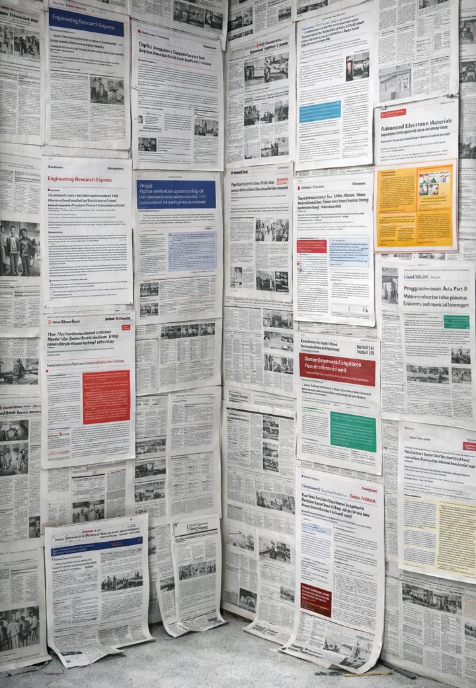

PLASMA PHYSICS • PHOTONICS • ANALYTICAL CHEMISTRY
A comprehensive list of peer-reviewed journal papers and academic contributions in low-temperature plasma diagnostics, mass spectrometry, and laser applications.
Michele Vasile, Odhisea Gazeli, Romolo Laurita, Matteo Gherardi, "Designing and plasma characterization of monolithic additively manufactured dielectric barrier discharge plasma sources", Engineering Research Express, March 2026.
Read Paper ↗Odhisea Gazeli, Marios Christodoulou, Nikolaos Argirusis, George E. Georghiou, Efstathios A. Elia and Agapios Agapiou, "Rapid Screening of Commercial CBD Oils by Heat-Assisted Dielectric Barrier Discharge Ionization (HA-DBDI) Mass Spectrometry and Correlation-Based Fingerprinting", Analyst RSC, February 2026.
Read Paper ↗Odhisea Gazeli, David Moreno-González, Marcos Bouza, Charalambos Anastassiou, George E. Georghiou, Antonio Molina-Diaz, Joachim Franzke, and Juan F. García-Reyes, "An absolute quantitative approach to study the desorption step in plasma-based ambient MS methods", Analytical Chemistry ACS, January 2026.
Read Paper ↗Odhisea Gazeli, Romolo Laurita, Filippo Capelli, Matteo Gherardi, "Optical Emission Spectroscopy of Low-Pressure DC Argon Plasmas for Reconfigurable Metadevices", Journal of Physics D: Applied Physics, October 2025.
Read Paper ↗Mirko Barbuto et al., "Modeling and Characterization of Plasma Tubes as Building Blocks for Reconfigurable and Programmable Metasurfaces", Advanced Electronic Materials, Wiley, December 2025.
Read Paper ↗Odhisea Gazeli*, Constantinos Lazarou, Marcos Bouza, David Moreno-González, Charalambos Anastassiou, Joachim Franzke, Juan F. García-Reyes*, "Insight into Desorption Mechanisms in a Helium Low-Temperature Plasma Ionization Source Using Computational Simulations", Journal of the American Society for Mass Spectrometry, September 2025.
Read Paper ↗Odhisea Gazeli, Efstathios A. Elia, Nikolaos Argirusis, Constantinos Lazarou, Charalambos Anastassiou, Joachim Franzke, Juan F. Garcia-Reyes, George E. Georghiou, Agapios Agapiou, "Low-Cost Heat Assisted Ambient Ionization Source for Mass Spectrometry in Food and Pharmaceutical Screening", Analyst RSC, July 2024.
Read Paper ↗A. Remigy, B. Menacer, K. Kourtzanidis, O. Gazeli, K. Gazeli, G. Lombardi and C. Lazzaroni, "Absolute atomic nitrogen density spatial mapping in three MHCD configurations", Plasma Sources Science and Technology, February 2024.
Read Paper ↗Walid S. Salah, O. Gazeli, C. Lazarou, C. Anastassiou and G. E. Georghiou, "Investigation of negative corona discharge Trichel pulses for a needle-plane geometry via two numerical 2D axisymmetric models", AIP Advances, September 2022.
Read Paper ↗K. Gazeli, M. Hadjicharalambous, E. Ioannou, O. Gazeli, C. Lazarou, C. Anastassiou, P. Svarnas, V. Vavourakis and G. E. Georghiou, "Interrogating an in-silico model to determine helium plasma jet and chemotherapy efficacy against B16F10 melanoma cells", Appl. Phys. Lett., January 2022.
Read Paper ↗P. Vogel, C. Lazarou, O. Gazeli, S. Brandt, J. Franzke, and D. Moreno-González, "Cold Plasmas in the Fight Against Cancer Providing New Detection Methods", ILTPC Newsletter 19, December 2021.
Read Paper ↗O. Gazeli, C. Lazarou, G. Niu, C. Anastassiou, G. E. Georghiou, J. Franzke, "Propagation dynamics of a helium micro-tube plasma: Experiments and numerical modeling", Spectrochimica Acta Part B: Atomic Spectroscopy, August 2021.
Read Paper ↗Gazeli O., Stefas D., Couris S., "Sulfur Detection in Soil by Laser Induced Breakdown Spectroscopy Assisted by Multivariate Analysis", Materials, 2021.
Read Paper ↗E. François, O. Gazeli, S. Couris, G. N. Angelopoulos, B. Blanpain, and A. Malfliet, "Laser-induced breakdown spectroscopy analysis of the free surface of liquid secondary copper slag," Spectrochim. Acta Part B, August 2020.
Read Paper ↗P. Vogel, C. Lazarou, O. Gazeli, S. Brandt, J. Franzke, and D. Moreno-González, "Study of Controlled Atmosphere Flexible Microtube Plasma Soft Ionization Mass Spectrometry for Detection of Volatile Organic Compounds as Potential Biomarkers in Saliva for Cancer," Anal. Chem., July 2020.
Read Paper ↗E. Bellou, N. Gyftokostas, D. Stefas, O. Gazeli, and S. Couris, "Laser-induced breakdown spectroscopy assisted by machine learning for olive oils classification: The effect of the experimental parameters," Spectrochim. Acta Part B, January 2020.
Read Paper ↗O. Gazeli, E. Bellou, D. Stefas, and S. Couris, "Laser based classification of olive oils assisted by machine learning," Food Chemistry, January 2020.
Read Paper ↗
💡 Interactive Search: Hover your mouse over the collage above to discover active floating research "bubbles". Click a bubble to reveal the paper details on the left and open the original publication!